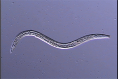
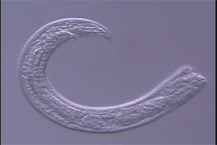

Cervidellus kheirii
Virtual specimen prepared by Melissa Yoder, and Paul De Ley
Click on the appropriate thumbnail image to select the relevant specimen.

Adult Female

Male posterior half
copyright 2002